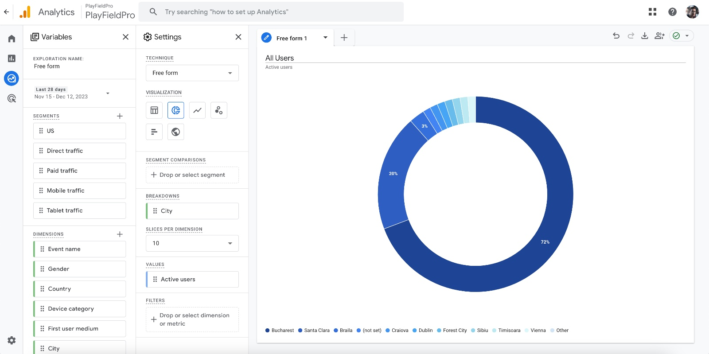
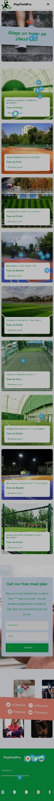

Team and Roles
-
Lucian-Mihai Stan - Team Leader
Email: stanlucianmihai@gmail.com -
Cristina-Ramona Serban - Quality Assurance
Email: cristinaserban00906@gmail.com -
Dario Velo - Full-stack Developer
Email: dario.velo@stud.fils.upb.ro -
Gabriel Oprea-Groza - Full-stack Developer
Email: gabrielopreagroza@gmail.com -
Tudor-Adrian Scarlet - Business Analyst
Email: adriannscarlet@gmail.com -
Vlada Ciubuc - Product Manager
Email: vlada.ciubuc16@gmail.com
Problem Description
In today's busy world, sports lovers often struggle to find and book sports courts. They face problems like not knowing where courts are available or dealing with conflicting reservations, leading to disputes or wasted playing time. There's no centralized platform for feedback on court quality, maintenance, and safety, which makes things even more challenging. Unclear pricing and uncertain availability add to the difficulties.
Solution / Value Proposition
Introducing PlayFieldPro, a modern platform that connects court owners with passionate players. It allows users to easily book sports courts in real-time, with clear pricing and a system for leaving reviews. The user-friendly design helps people find and reserve their preferred courts without any hassle. Real-time availability prevents scheduling conflicts, and transparent pricing ensures no hidden costs. The genuine user review system provides valuable insights, helping players make informed choices.
Customer Segments
PlayFieldPro caters to various groups of people. This includes sports court owners who want to increase their bookings and make their management smoother, as well as individual players, whether they play for fun or professionally. Sports clubs and organizations that need regular or large bookings can also benefit. Coaches and trainers, who constantly need access to courts for training sessions, are also a significant part of the platform's users.
Competition
In the competitive market, there are local websites for booking sports facilities that have been around for a while. Some people still use older methods like calling or visiting in person to book courts. Of course, there are also other online platforms offering similar services.
Advantage Over Competition
PlayFieldPro has several advantages over its competitors. While many platforms focus on just one or two sports, PlayFieldPro covers a wide range, making sure everyone feels included. The feedback system isn't just for show, it's a crucial part of how the platform ensures quality. The real-time scheduling feature prevents double bookings. Its strong cloud-based system ensures data security, easy expansion, and access from anywhere. Plus, PlayFieldPro is always evolving, regularly updating its features based on what users want.
Key Metrics
In any business, what guides its path are the metrics it uses. For PlayFieldPro, the number of active users is crucial, showing how much it's growing and how widely it's used. The number of monthly bookings shows how much the courts are in demand and how important the platform is. The user retention rate indicates how satisfied and reliable users find the platform, while the average revenue per user (ARPU) shows how well the platform is doing financially. Lastly, how quickly court owners join the platform shows how much it's expanding.
Cost Structure
Understanding the costs is essential for financial responsibility. PlayFieldPro's costs include creating and maintaining the app, which involves regular updates and server expenses. A substantial part of the budget is set aside for marketing and acquiring customers, like advertising, promotions, and forming partnerships. The integrated payment system comes with transaction fees. Providing a smooth user experience needs a dedicated customer support system, and operational costs cover salaries and utilities, which are essential for the business.
Revenue Streams
PlayFieldPro earns revenue through various channels. Its main source is the booking fees, a small percentage taken from each court reservation. Court owners can also access special features through subscription models, like detailed analytics or promotional opportunities. Because of its broad reach, the platform attracts advertisement revenue from sports-related brands. Partnerships with top sports brands and lucrative affiliate programs also contribute to its success in the market.
Guidelines and questions for interviews
The proposed questions have the potential to bring more clarity to the needs, desires, and expectations of different categories of users (people who rent sports facilities, property owners, and coaches). By understanding the psychology of users and their experiences, we can develop a more efficient and personalized application. These questions can indicate to us: understanding the needs of users, user segmentation, the development of key features, marketing strategies, and the optimization of the user experience..
The first category of users of the application is coaches. We have prepared a set of 5 questions for them as follows:
Cum v-ați promova sau v-ați găsit clienți pentru sesiunile dumneavoastră de antrenament până acum? - Through this question, we can identify the personal marketing strategies of the coach and may provide suggestions for improving the application.
Unde pot găsi potențialii clienți feedback despre serviciile dumneavoastră? - This question aims to understand the source of reviews and can help in the development of strategies to obtain more feedback.
Prestați toate serviciile în incinta aceluiași teren? - This question provides information about the accessibility of the training sessions.
Ați antrenat sau ați organizat sesiuni de instruire pe terenuri închiriate? - This question examines the coach's experience and may suggest their versatility.
Considerați că o astfel de aplicație v-ar încuraja să invitați prieteni sau colegi să se alăture sesiunilor dumneavoastră de sport? - This question aims to understand the potential for growth and promotion of the coach's services and may provide insights into social networks.
The second category of users of the application is the property owners. We have prepared a set of 6 questions for them as follows:
Ce strategii utilizați pentru a promova terenurile dvs? - This explores the marketing efforts of the property owner and may provide insight into effective strategies or areas that need improvement.
Cum gestionați în prezent programările și rezervările pentru terenuri? - This provides an overview of the reservation management processes and may suggest potential optimization points.
Cât de mult timp petreceți pe săptămână pentru administrarea rezervărilor și a cheltuielilor? - This provides information about the level of commitment and resources dedicated to administration.
Ce dificultăți întâmpinați în gestionarea încasărilor și rezervărilor terenurilor? - This helps identify specific issues that require attention.
Cum căutați antrenori care să vină să își desfășoare activitatea pe terenurile dumneavoastră? - Here, the process of recruiting coaches is explored, and it may provide insights into it.
Antrenorii reprezintă unii dintre cei mai importanți clienți: Cum ii mențineți în prezent loiali și ce măsuri luați pentru a-i recompensa pentru fidelitatea lor? - This focuses on strategies for retaining coaches and may provide suggestions for rewarding them.
The third category of users of the application is the customers (those who rent the facilities/book a coach). We have prepared a set of 8 questions for them as follows:
Sunteți o persoană activă? - This question aims to assess the level of involvement in sports activities.
Care sunt activitățile tale sportive preferate? - This helps identify specific sport preferences and can assist in providing personalized suggestions or offers.
Cum ați rezervat ultima dată un teren pentru sporturile pe care le practicați? - This question provides insights into the customer's preferences regarding reservation services.
Cât de des vă bazați pe recomandările prietenilor sau recenziile de pe Google în ceea ce privește alegerea unui teren de sport? - This can offer information about social influence and the credibility of reviews for the user.
Ați căutat vreodată un antrenor pentru sportul pe care doriți să îl practicați? - This question explores the interest in coaches and personal training in sports.
Ce canale ați folosit pentru găsirea unui antrenor pe placul vostru? - Here, the user's behavior regarding coach search is examined and can help in developing effective marketing channels.
Ce fel de informații vă așteptați să găsiți pe o platformă online pentru rezervarea unui teren de sport? - This provides an insight into user expectations regarding platform features.
Ce fel de informații ați dori să aflați pe o platformă online pentru găsirea unui antrenor de sport? - This question explores information needs related to coaching and can assist in developing platform content.
How we identified the problem
To identify the problem, we analyzed the answers of potential users, trainers and owners to understand better their needs, what should be improved for a better experience of the booking process. We have analyzed the feedback provided by clients who have rented sports fields before. We tried to determine the users' needs through a form to understand what they liked and what they didn't like when they previously rented sports fields. We researched what existing solutions are already on the market to see what are the problems and complaints faced by the users.
What we thought is a solution for the problem
Develop a user-friendly application for renting sport fields which could offer for example easy booking process,transparent pricing, real-time availability and more others.
Customer discovery
First of all, we defined our target audience that would be willing to use our application. We conducted some interviews with the target group through a form to understand their needs. We analyzed the answers from the form with the help of which we tried to define the common problems. We tried to validate our assumption considering the feedback of potential users to understand if our product could solve their problems.
How interviews affected our product
Following the interviews, we tried to improve the experience that users will have by adding more detailed information about the rental process.We added the option to choose a coach according to each user's preferences. We streamlined and optimized the reservation management for the owners of sports fields.
Landing Page
Check it out at: link We know it will evolve a lot, but it’s a start!
Wireframe
We have a mockup here (first iteration): link1 link2
We achieved this milestone in Notion - PlayFieldPro
Lead collection section to our landing page
We use webflow to collect their emails.
Lead collection in PlayFieldPro!


Analytics and Hotjar
 
Who we brought to the landing page
We brought our friends and acquaintances and the people we interviewed and some of their friends. We also posted on Facebook groups dedicated to sports and college groups that aim to initiate a start-up.
Leading campaign
We don’t think we are there yet with our offering. We have analytics, and we can measure the conversion rate by how many visitors enter an email address, and how many click the Rezerva un teren! button and also other sections of the booking flow.
After evaluating the results, we found that the most effective channel was social media promotion. This channel not only brought us greater exposure but also attracted participants who were interested and dedicated to our initiative. Therefore, the online promotion strategy proved to be the most efficient in achieving our goals.
The size of the market
Facebook - several groups with members ranging from 2,000 to 12,000 members
- World Of Basketball - https://www.facebook.com/groups/1508600082502091 - 11.3k members
- Fotbal București - https://www.facebook.com/groups/1691305901157213 - 2k members
- Fotbal Feminin - https://www.facebook.com/groups/644181528975943/ - 2.5k members
The Politehnica National University of Science and Technology Bucharest boasts a student body exceeding 10,000 individuals, all keenly interested in engaging in their favorite sports. Additionally, the city of Bucharest is home to an active and sports-oriented population of 200.000 citizens. Our mission is to promote a culture of sportsmanship, encouraging everyone, including students, to participate in activities such as football, basketball, and various other sports to enhance their skills and overall well-being.
Bucharest currently offers a substantial infrastructure for sports enthusiasts, with over 50 football courts and 100 basketball fields available for rental. The demand for these facilities is consistently on the rise, driven by the influx of students choosing Bucharest as their destination for academic pursuits. The abundance of both football courts and basketball fields, each paired with its respective owner, creates a promising landscape for our web application, providing ample opportunities for these venue owners to promote their spaces effectively.
This results in an estimate of an addressable market of 250 000 in Bucharest.
In the Romanian market for sports enthusiasts seeking court reservations, an analysis of key competitors reveals varying levels of online traffic: BookSport (booksport.ro) Monthly Visits: 1,000 Offer: Comprehensive selection of nearly 100 courts, primarily catering to tennis enthusiasts.
SudArena (sudarena.ro): Monthly Visits: 400-600 Offer: 9 tennis courts and 3 mini football courts.
RezervaTeren (rezervateren.ro): Monthly Visits: 300-400
Offside Arena (offsidearena.ro): Monthly Visits: 200-300
Joaka (joaka.ro): Monthly Visits: Approximately 100
The analysis suggests that the online market for court reservations in Romania is characterized by a range of competitors, each attracting a relatively modest number of monthly visits. The competition appears to be in a niche with varying offerings, such as tennis-focused platforms like BookSport and SudArena. The overall market size, as indicated by the traffic figures, suggests a segment that is currently of moderate size, offering opportunities for strategic differentiation and targeted growth initiatives. Understanding this landscape can help in formulating a market strategy tailored to the specific needs and preferences of the Romanian sports enthusiasts. Based on the provided data, we can estimate the Total Addressable Market (TAM) for sports enthusiasts seeking court reservations to be in the range of 4,000 to 6,000 individuals. Recognizing that not all players may prefer using apps and may rely on traditional methods like word of mouth or direct calls to find courts, we conservatively estimate the Serviceable Available Market (SAM) to be approximately 25% of the TAM. Considering the existing competition in the field, many of which lack modern UI/UX features or offer a limited range of sports, we project the Serviceable Obtainable Market (SOM) to be around 30% of the SAM. This implies that our platform could potentially serve 1,000 to 1,500 sports enthusiasts within the Serviceable Available Market, with an achievable portion of 300 to 450 users. This analysis accounts for both the broader market potential and the specific factors that may influence user adoption within the identified market segments.
The approximate number of players / competitors in your targeted market
In Romania there are some platforms similar to the one we are working on. Among the most popular are:
- • Joaka
- • Booksport.ro
- • Atlassport
- • Rezervateren.ro
There are several popular platforms at the international level such as:
- • CourtHop
- • Playgrounds
- • Sportlyzer
Our competition and market share
Booksport
- • Booksport manages over 250 active sports fields, primarily tennis courts, within 80 different clubs.
- • Annual revenue is currently around 12,000 euros. Booksport is self-funded but actively engaging with potential investors to expedite growth.
- • In three years of operation, Booksport has facilitated 17,000 reservations and boasts over 6,000 active members.
- • There is a significant growth in demand for online reservation services, with a 25% increase in the first eight months of 2023 compared to the same period the previous year.
- • Noticeable increase in the acceptance of digital services, with a predominant use of the mobile application for transactions.
Rezervateren.ro
- • Total Visits (3,600): The total number of visits provides an indication of overall traffic to the website.
- • Pages per Visit (0.14): The low value for pages per visit suggests minimal engagement, with visitors viewing only a small fraction of a page on average.
Joaka.ro
- • Total Visits (137): Indicates the total number of visits to joaka.ro.
- • Last Month Change: Decreased by 13.29% - Reflects a decrease in traffic compared to the previous month.
Atlassport
- • Category Rank (Sports - 460): The website holds a good position within the specified category in Romania.
- • Total Visits (9,500): The total visits of 9.5K are a reasonable level of traffic, reflecting interest in the content or services offered.
- • Bounce Rate (69.74%): The bounce rate is relatively high at 69.74%, suggesting that nearly 70% of visitors leave without engaging further.
- • Pages per Visit (1.71): The average pages per visit (1.71) indicate a moderate level of exploration during each visit.
- • Avg Visit Duration (00:00:54): The average visit duration is short at 54 seconds.
Our potential market share
Estimated Potential Market Share:
- • Year 1: 1%
- • Year 2: 3%
- • Year 3: 4%
- • Year 4: 6%
- • Year 5: 8%
In essence, our initiative not only taps into the thriving sports culture within the Politehnica National University and the active citizenry of Bucharest but also addresses the growing demand for sports facilities, fostering a vibrant community of players, venue owners, and trainers through our comprehensive web application